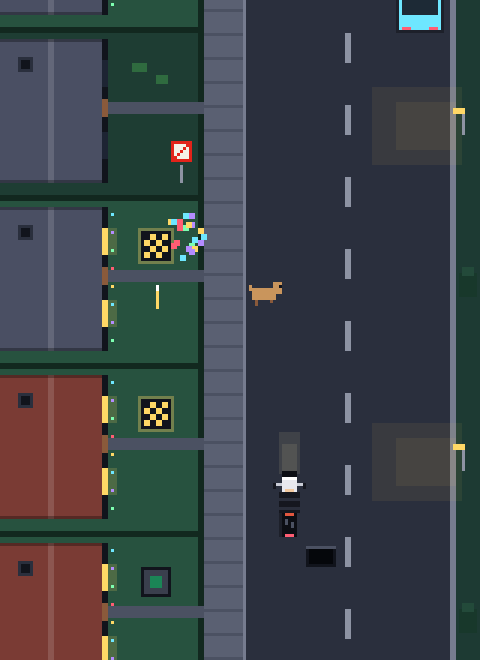
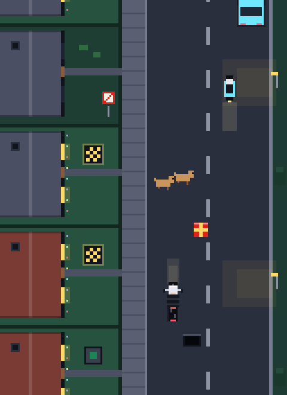
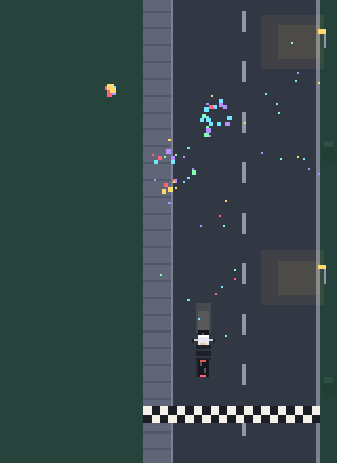

Fatbike Boy
Het gratis arcadespel voor iedereen die Paperboy nog kent. Rijd op je fatbike door de straat en bezorg vuurwerk, in pixel art en gewoon in je browser.
Het is oudejaarsavond, 23:40. De buren hebben een vuurwerkshow besteld en jij brengt hem langs. Maar let op: niet iedereen wil vuurwerk in de tuin.
Speel gratisGeen account, geen advertenties. Werkt op computer, tablet en telefoon.

Hoe werkt Fatbike Boy?
Rijd de straat in
Je fatbike rijdt vanzelf door. Jij stuurt naar links en rechts en let op alles wat in de weg staat.
Gooi op de gele tegel
Bij een klant ligt een gele tegel in de tuin. Gooi een vuurwerkpijl naar links en raak de tegel voor punten.
Haal het einde van de straat
Om middernacht volgt een vuurwerkfinale. Daarna wacht een drukkere en snellere straat.
Wat zit erin?
Klanten en punten
Elke treffer op een gele tegel levert 100 punten op, plus een bonus voor elke treffer op rij.
Vuurwerkvrije tuinen
Een verbodsbordje betekent: niet gooien. Drie klachten en de wijkagent neemt je tas in.
Obstakels
Geparkeerde auto's, kliko's, putten, honden en tegemoetkomende scooters. Drie botsingen en je accu is leeg.
Pakketten en oliebollen
Rode pakketten vullen je voorraad aan. Oliebollen langs de weg zijn 50 punten waard.
Steeds drukker
Elke nieuwe straat is langer en sneller, met meer klanten en meer verkeer.
Beste score
Je beste score blijft in je eigen browser bewaard. Kun je je eigen record verbeteren?
Zo ziet het eruit


Besturing
Je gooit altijd een vast stuk naar links, dus mikken doe je met sturen en het juiste moment kiezen.
Op de computer
Stuur met ← → of A D. Gooi met de spatiebalk.
Op telefoon en tablet
Stuur met de twee pijlknoppen onder het speelveld. Gooi met de rode knop of door op het speelveld te tikken.
Ken je Paperboy?
Paperboy is een van de bekendste arcadespellen uit de jaren tachtig: je fietst door een straat, gooit kranten bij abonnees en ontwijkt alles wat in de weg staat. Wie het ooit speelde, weet nog hoe het stuur van de speelkast op een fietsstuur leek.
- Paperboy: arcadespel van Atari Games, in 1985 uitgebracht. De speelkast had een fietsstuur als bediening.
- Zelf spelen: het Internet Archive heeft het spel in zijn Internet Arcade gezet. Speel Paperboy in je browser.
- Anders aan Fatbike Boy: je kijkt van boven in plaats van schuin, je rijdt op een fatbike en de bezorging is vuurwerk op oudejaarsavond.
Fatbike Boy is geïnspireerd op het idee van een bezorgspel, maar helemaal nieuw gemaakt: nieuwe code, nieuwe pixel art en een eigen verhaal. Elk spel in dit genre is anders en het idee zelf is van niemand.
Fatbike Boy is een onafhankelijk project en niet gelieerd aan Atari Games of de rechthebbenden van Paperboy. Paperboy wordt hier alleen genoemd ter verwijzing.
Veelgestelde vragen
Is Fatbike Boy hetzelfde als Paperboy?
Nee. Paperboy is een arcadespel van Atari Games uit 1985. Fatbike Boy is een nieuw, onafhankelijk spel in dezelfde geest: je rijdt door een straat en bezorgt spullen bij de juiste huizen. Het verhaal, de figuren, de beelden en de code zijn nieuw en het spel is niet gelieerd aan Atari Games of de rechthebbenden van Paperboy.
Kan ik Paperboy nog spelen?
Ja. Het Internet Archive heeft Paperboy online speelbaar gemaakt in de Internet Arcade. Je vindt de link hierboven bij het kopje over Paperboy.
Is Fatbike Boy gratis?
Ja, het spel is gratis, zonder account en zonder advertenties. De broncode is open source onder de MIT-licentie.
Werkt het op een telefoon?
Ja. Op een telefoon of tablet stuur je met de knoppen onder het speelveld en gooi je met de rode knop. Op een computer gebruik je de pijltjestoetsen of A en D om te sturen en de spatiebalk om te gooien.
Worden er gegevens van spelers verzameld?
Nee. Het spel gebruikt geen account, geen cookies en geen statistieken. Alleen je beste score wordt in je eigen browser bewaard.
Is dit spel een oproep om vuurwerk te gooien?
Nee. Fatbike Boy is een spel met pixels en grapjes. Vuurwerk is in het echt gevaarlijk en hoort niet naar mensen, dieren, auto's of tuinen te worden gegooid. Steek vuurwerk alleen af waar en wanneer dat mag en volg de veiligheidsregels.